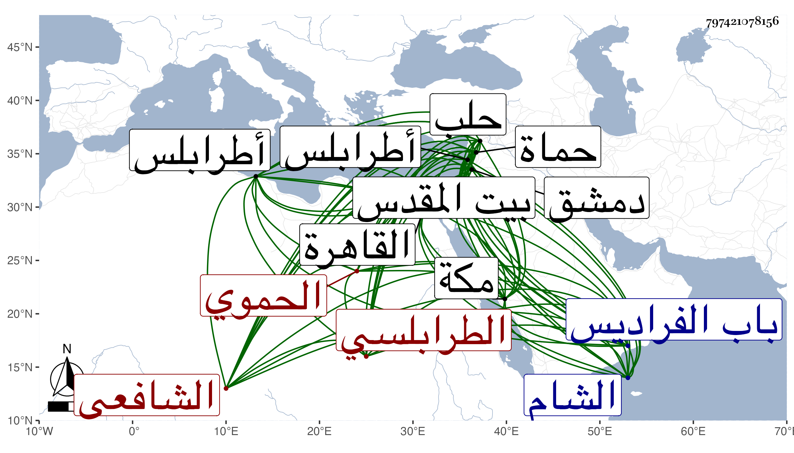

0902Sakhawi.DawLamic.ITO20230111-ara1.EIS1600.797421078156
Biography ID: 797421078156
إبراهيم بن عمر بن إبراهيم البرهان الحموي الأصل السوبيتي الطرابلسي الشافعي ويعرف بالسوبيني . ولد قبيل القرن تقريبا بسويين قرية من قرى حماة وقرأ القرآن بعضه بها وسائره بحماة وتفقه بالشمس بن زهرة والشهاب أحمد بن البدر والتقي بن الجوبان والشمس النويري وولده السراج وسعد الدين الآمدي والشمس الهروي وليس بالقاضي وعنه أخذ الغبار وعلم التجنيس كلاهما في الحساب وعلى الأولين والشهاب بن الحبال سمع الحديث بل وأخذ فقه الحنفية عن الشمس الصفدي القاضي بحث عليه جميع المختار وغيره وعنه أخذ العربية وكذا أخذها مع الصرف عن الشهاب بن يهود الشامي الحنفي والفرائض والوصايا عن الشهاب أحمد المغربي المالكي وقدم القاهرة غير مرة وأخذ الجبر والمقابلة والمساحة والمقنطرات في الوقت وغيرها عن ابن المجدي وكذا أخذ عن ابن القاياتي وابن البلقيني وشيخنا وأكثر من ملازمته ونوه شيخنا به حتى ولي قضاء مكة عوضا عن المحب الطبري في أوائل رجب سنة ثمان وأربعين وأنعم عليه السلطان فيما قيل بما ارتفق به ولم يلبث أن انفصل في شوال من التي تليها واستقر في صفر من سنة خمسين في قضاء حلب ثم ولي قضاء الشام وحمدت سيرته في ذلك كله لكن لصقت به أشياء فيها مزيد تنطع مع غفلة وسذاجة ويبس وعدم دربة بالجملة وكان كثير الاستحضار للفقه مع معرفة بالفرائض والحساب ولكنه لم يكن في التحقيق وحسن التصور بالبلوغ . وله تصانيف كثيرة منها مما كتبته جزء في مسائل تكون مستثناة من قاعدة لا ينسب لساكت قول قرضه شيخنا وغيره من الأئمة وتعقب أكثرها بهامش من نسختي شيخنا ابن خضر وقد راج أمره على شيخنا فإنه قال أنه شافعي المذهب كثير المعارف في عدة علوم رأس في الفرائض وهو اليوم عالم طرابلس يشتغل في فقه الشافعية والحنفية إلى أن قال وذكر لي أن جده لأمه الشيخ عمر السوبيني كان صالحا له كرامات انتهى . وكان كثير العبادة والتلاوة والتهجد والأفعال المرضية والتواضع إلا مع المتكبرين وسلامة الفطرة غالبة عليه وقد أطلت ترجمته في معجمي وأفحش البقاعي في شأنه . مات بدمشق بعد أن زار بيت المقدس في ذي الحجة سنة ثمان وخمسين ودفن بمقبرة باب الفراديس من جهة الشمال وكانت جنازته حافلة حسبما كتب إلي به بعض الدمشقيين قال وكان من أوعية العلم مطرح التكلف على طريقة السلف له عدة تصانيف رحمه الله وإيانا .
